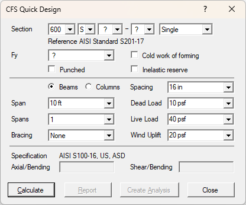

This window is displayed when you choose Quick Design from the File menu. The CFS Quick Design tool allows you to quickly check or optimize a design for a variety of common members and loadings.

| Section | A series of selections are used to define the section to check or optimize. The nomenclature corresponds to the product designation defined by the North American Standard for Cold-Formed Steel Framing (S201-12): web depth, section type, flange width, thickness, and configuration. The flange width and thickness designations may be set to a wildcard (?) which will then be optimized for the strength requirements. |
| The configuration options are Single, Back-to-Back, and Boxed. For Back-to-Back and Boxed configurations, the connector spacing used in the design checks is assumed to be twice the web depth. | |
| Fy | The section material yield strength used for design calculations. This may be set to a wildcard (?) which will then be optimized for the strength requirements. |
| Punched | Indicates whether the design check is performed for a member with web holes. The hole width, length, and spacing correspond to the AISI Standard S201-17. |
| Cold work of forming | Indicates whether to calculate and apply the strength increase from cold work of forming. |
| Inelastic Reserve | Indicates whether to calculate and apply the inelastic reserve strength. |
| Beams/Columns | Indicates whether the members are designed as beams or columns. |
| Span | The span length, which is used for major axis bending. |
| Spans | The number of identical spans, up to 3. |
| Bracing | Indicates the type of bracing between vertical supports: None, Mid-Point, Third-Points, Quarter-Points, or Fully Braced. This will create horizontal (X) and torsional (T) supports at the specified intervals. These brace points will restrain all flanges against twisting and lateral movement. |
| Spacing | The center-to-center spacing of the beams or columns to be checked. The loads are multiplied by the spacing to obtain the individual member loads. |
| Dead Load | Gravity load due to the weight of construction materials and permanent equipment, stated in force per unit area for beams, and force per unit length (axial wall load) for columns. |
| Live Load | Gravity load due to intended use and occupancy, stated in force per unit area for beams, and force per unit length (axial wall load) for columns. This may include roof life load or other loads which are not dead loads. |
| Wind Load or Uplift | Transverse load due to wind, stated in force per unit area. For beams, this is an uplift force as is commonly applied to roof members. |
| Axial/Bending | The controlling unity check result for combined axial and bending interaction. It is displayed after the calculation is completed. |
| Shear/Bending | The controlling unity check result for combined shear and bending interaction. It is displayed after the calculation is completed. |
| Calculate | Runs the design check calculations using the current Specification setting. Load combinations from ASCE 7-22 or NBCC 2020 are used as applicable. Whenever a wildcard (?) is chosen for flange, thickness, and/or Fy, this calculation cycles through all the combinations and shows the optimum selections and the corresponding unity check results. |
| The optimum is chosen as the lightest weight section meeting both unity checks. If no combination meets the design requirements, the optimum is chosen as the combination with the lowest unity checks. Some combinations may not represent readily available shapes (as indicated by SFIA or SSMA), and are therefore omitted in the optimization. Torsion is not considered in the analysis or design. | |
| Report | For completed calculations, the Report button summarizes the design check in a report window. There is only one report window for Quick Design, so subsequent checks will be added to the same report. This report may be printed and saved. |
| Create Analysis | For completed calculations, the Create Analysis button converts the design check to a full CFS analysis, and the corresponding CFS section. This is useful for customizing the geometry or loads, and for other design checks such as web-crippling. |
| Close | Closes the Quick Design window. |